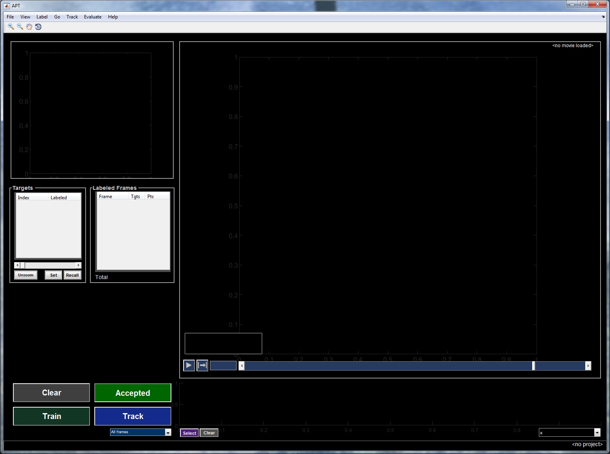

APT User Guide
APT: Predicts the location of body parts based on part labels from a set of video frames.
APT takes video files as inputs (with optional tracking files), and the user interactively trains a body part classifier by labeling a user-specified number of body part locations.
APT is being developed by Kristin Branson, Mayank Kabra, Allen Lee, Alice Robie, and Felipe Rodriguez. All work is funded by the Howard Hughes Medical Institute and the Janelia Research Campus.
This program is free software: you can redistribute it and/or modify it under the terms of the GNU General Public License as published by the Free Software Foundation, either version 3 of the License, or (at your option) any later version. This program is distributed in the hope that it will be useful, but WITHOUT ANY WARRANTY; without even the implied warranty of MERCHANTABILITY or FITNESS FOR A PARTICULAR PURPOSE. See the GNU General Public License (version 3) for more details.
Contents
The git repository for APT is hosted on github.
Compiled binaries and source code releases are available here.
APT also requires the following:
JAABA, available here , and Piotr Dollar's toolbox, available here
If you are working with multi-camera data, you may need calibration software for your rig, e.g Caltech camera calibration toolbox
In the APT directory, copy Manifest.sample.txt to Manifest.txt and edit to point to your copy of JAABA and Piotr's toolbox (specify the root directory, which contains the subfolders filehandling/ and misc/,
e.g. jaaba, c:\pgms\jaaba
piotr, c:\pgms\pdollar_toolbox).
NOTE: In Manifest.sample.txt there is also a path to camera/calibration/toolbox, if you are not using multi-camera it is OK to not include this line.
APT is a MATLAB-based program. To run it:
- Start MATLAB.
- Within MATLAB, change into the directory containing the APT code:
>> cd APT;
- Run APT.setpath:
>> APT.setpath;
- Run StartAPT on the command line to start APT:
>> StartAPT;

File -> New Project, enter a project name. Track -> Configure tracking parameters. This pops up a window with parameters to set. If you click on a parameter, a description of the parameter shows up at the bottom of the window. Click Apply. Go to File -> Manage movies and select the movie that you would like to work with. You will be prompted for a trx file. Select a trx file, or, if none, press “cancel”. Close or minimize the Movie window. Go to File -> Save as and save your project. This will save a .lbl file with your project in it.
File -> Load Project, select the .lbl file to load. If the locations of the movies in the project has changed since you last opened the project it will prompt for their new locations.
a/d, -/=, or the left and right arrow keys all move one frame left/right respectively. Using these keys while holding down the ctrl button uses 10 frames steps. You can also navigate using the mouse and the navigation bar under the image. Clicking on the bar to the left or right of the slider jumps by 100 frames. Single clicks on the arrows at the ends of the navigation bar moves by a single frame. Holding the end arrows down steps through the movie a frame at a time. To look at only labeled frames, hold the shift button while using the right and left arrow keys.
Useful view options for multi-target projects with tracking and orientation:
View -> Center on target - keeps current target in the center
View -> Rotate video so target is always pointing up
View -> Zoom out/full images or unzoom button - view full image
Use slider bar above ‘unzoom’ to adjust zoom not the magnifier +/-
Zoom slider bar - adjust zoom then ‘set’, ‘recall’ will change back to ‘set’ value after changing movies.
Labeling modes:
There are different labeling modes, which you can switch between under Setup->.
- Sequential mode:
Allows you to just click your points in order, and then accept when you’re done.
You can edit placement after you finish clicking sequence by:
- Clicking and dragging a point
- Activating a point with a number key that corresponds to the label number and then clicking the correct location for the label. Activated points change from ‘+’ to ‘x’ (Numbers above 10 are accessed by `(back quote) + number key).
- Activating a point with the number keys and moving with arrow keys.
Currently the only way to ‘un-activate’ label is to move the label to new location or accept labels.
- Template mode:
Each frame will have unassigned label points in random locations on the image (white pluses with colored numbers next to them). To label the frame, move the pluses to where they should belong on the target (mouse/fly). You can drag and drop a point with the mouse or you can select (or unselect) a point with its associated number key (1-9). When a point is selected it changes from a plus to an x. A selected point can be moved using the arrow keys (helpful for fine-tuning positions). Shift plus the arrow keys moves the selected point in larger jumps. When a point is selected, a mouse click anywhere on the image will move the selected point to that location.
Once you are happy with the positions of the points, click the accept button, or press the “s” key or the space bar to save the labels for the current frame.
Make sure to press the accept button at each frame once you are done or your changes will not be recorded.
Once you have a reasonable number of frames labeled you are ready to train a classifier.
To remove frames (useful for making a subset, or if you change your mind about how something will be labeled), you can just click the “Clear” button on that frame (next to the Accepted button), and those points will go back to unassigned.
To just look at labeled frames, holding the shift button while using the right and left arrow keys will move through only the labeled frames, skipping the unlabeled ones.
How well APT works depends critically on getting the tracking parameters set well for the particular application. Each tracker has different parameters.
Tracking parameters input menu:
Track->Configure tracking parameters
What displays will depend on what type of tracking you are using. Clicking on each option will produce a description of that option at the bottom of the page. Note that many of the default options are selections from dropdown menus, click the current option to see the other options.
Once you have set the parameters to what you would like, hit the Apply button.
- Type: cpr
- Histogram Equalization
- Enable [ ] default=unchecked
- Num frames sample default=1000
- Multiple Targets
- Target ROI
- Radius (pixels) default=300
Crop a square with this radius (in pixels) around each target for training/tracking
- Pad background default=0
Pad ROIs with this background value (grayscale) if necessary.
- Mask Neighbors
- Enable [ ] default= unchecked
- Background Type default = dark on light (light on dark, other)
- Background Read Function default = empty
- Foreground Threshold default = 4
- Decimation Small default = 5
- Decimation Large default = 10
- Neighborhood Radius default = 100
- Chunk Size default = 3,000
- CPR
- Num iterations default = 50
Number of major iterations in regressor cascade.
- Num boosted regressors default = 50
Number of minor iterations per major iteration
- Ferns
- Depth default = 5
- Threshold
- Lo default = -0.2
- Hi default = 0.2
- Regularization Factor default = 0.01
- Feature
- Type default = 2lm, (1lm, two landmark elliptical, 2lmdiff)
- Meta feature default = diff, (single)
- Pool size default = 800
- Radius default = 2
- Major/minor ratio default = 2
- Num samples std default = 1.000
- Num samples correlation default = 10.000
- Rotational Invariance
- Orientation default = arbitrary, (fixed, arbitrary, arbitray trx - specified)
fixed:
arbitrary: animal orientation can be anything
arbitrary trx-specified: animal orientation can be anything and is specified in trx.theta
- Head landmark default = 1
- Tail landmark default = 2
- Replicates
- Num training replicates default = 60
- Num tracking replicates default = 60
- Jitter initial shapes [ ] default = checked
- Initial shape jitter/randomization factor default = 16
- Jitter initial shape locations [ ] default = checked
- Initial shape location default = 16
- Maximize spread of initial conditions [ ] default = unchecked
- Prune
- Method default = maxdensity (median, maxdensity global, smoothed trajectory)
Method of reducing CPR replicates to final tracking result
- Density length scale default = 5
Length scale (in pixels) for Gaussian kernel used during pruning. Used for ‘maxdensity’, ‘maxdensity global’, and ‘smoothed trajectory’ methods. Larger values include more distant shapes when computing a given shape’s likelihood.
- Trajectory smoothing weight factor default = 1
Scale factor applied to empirically-estimated ratio balancing trajectory smoothness against replicate density. Larger values upweight smoother trajectories. Used only for ‘smoothed trajectory’ method.
Click the Train button.
Track button
Click Track. You can change what frames you want it to track with the drop down menu below the blue “Track” button. After you choose what frames you want to track, press “Track”. Watch progress in MATLAB command line.
Tracking options in the Track dropdown menu:
- Current movie/target, labeled frames
- Current movie/target, all frames
- Current movie/target, all frames, every 10 frames
- Current movie/target, selected frames
- Current movie/target, selected frames, every 10 frames
- Current movie/target, within 100 frames of current frame
- Current movie/target, within 100 frames of current frame, every 10 frames
- Current movie, all targets, labeled frames
- Current movie, all targets, all frames
- Current movie, all targets, every 10 frames
- Current movie, all targets, selected frames
- Current movie, all targets, selected frames, every 10 frames
- Current movie, all targets, within 100 frames of current frame
- Current movie, all targets, within 100 frames of current frame, every 10 frames
Track->Export current tracking results->Current movie only
will export the predicted tracks for the current movie to a trk file.
Track->Export current tracking results-> All movies
will export the predicted tracks for all the movies to trk files
Contents of a trk file
Exporting manual labels to a .trk file:
Select File -> Import/Export -> Export Labels to Trk Files
The first time you do this it will save to the same directory as your movie files, with a filename of [movie file name]_[labeler project name]_labels.trk. If you go to export again, it will prompt for overwriting, adding datetime or canceling the export. Note that the _labels part of the filename distinguishes between a trk file of manual labels and a trk file of automatically generated labels.
There are two ways to evaluate performance in APT: Cross Validation and Ground-Truthing Mode. Both of these options are found under the “Evaluate” tab in the main menu bar.
APT uses k-fold cross validation, in which you train on (k-1)/k of the labels, and test on the held out 1/k labels for a partitioning of the labels into k sets.
To start Evaluate > Cross validation
THis will pop up a window that prompts for number of k-folds.
When cross validation is done running it will pop up a window with two buttons, "Export Results to Workspace" and "View Results in APT"
Pressing “Export Results to Workspace” will pop up a window that says “Wrote variable aptXVresults in base workspace”, you can then manually save that variable. Note that to load that variable in later to evaluate it you need to run APT.setpath to set the MovieIndex class.
Structure of the aptXVresults variable:
it is a [number of labeled targets] x 9 cell array, with the following columns:
- fold is the cross-validation set/fold index.
- mov is the movie index (into .movieFilesAll).
- frm is the frame.
- iTgt is the target index (index into .trx).
- tfocc is a [1xnpt] logical, true if pt is occluded.
- p is the GT/labeled position vector -- all x coords, then all y coords, so should be [1x2*npts].
- roi is a [1x4] [xlo xhi ylo yhi] for the cropping region when there are trx. xhi-xlo and yhi-ylo are set by Track->Configure tracking parameters->Multiple Targets -> Target crop radius
- pTrk is like p, but it is the CPR-tracked position vector.
- dGTTrk I think is [1xnpts], euclidean distance from p to pTrk for each pt.
[This is saved into the .lbl file now, and there is also a command to delete it]
Ground-Truthing mode enables you to assess the performance of your tracker on an unbiased set of APT-generated test frames.
Create a project, add movies, label frames, and train a tracker iteratively as you normally would in APT.
Select Evaluate>Ground-Truthing Mode. An orange "GT Mode" indicator should appear in the main UI, and the Manage Movies window should appear.
Manage Movies is now tabbed, with the "GT Movie List" tab selected. The project now contains two sets of movies: i) "regular" movies used for training and parameter refinement, and ii) "GT" movies for testing tracker performance.
Add test movies to the GT movie list. If possible, it is best to use movies that are not also in the regular movie list, ie that the project has never seen before.
When the movie list is complete, press the "GT Frames" button to bring up the Ground-Truthing window. The project can be saved at any time during this process. (If you close GT window it can be re-opened from movie manager GUI).
In the Ground-Truthing window, press the Suggest button to generate a new/fresh list of frames to label. At the moment, frames are sampled randomly from the available GT movies, with all frames equally weighted. Other options are available at the command-line (see below).
Click on a row in the table to navigate to a frame, or use the "Next Unlabeled" button. The APT main axes should become highlighted, indicating that the current frame/target is a GT frame. Label this frame. These labels will be used as GT labels against which the tracker will be compared.
When all GT frames are labeled, press "Compute GT Performance". APT will track the GT frames using the trained tracker, and compare the results to the manual GT labels.
Along with various plots, the Labeler property .gtTblRes provides a results table for each GT row: manual labels, tracked positions, and L2 error.
Save the project to preserve your GT movie list, the list of GT frames with their labels, and the GT results.